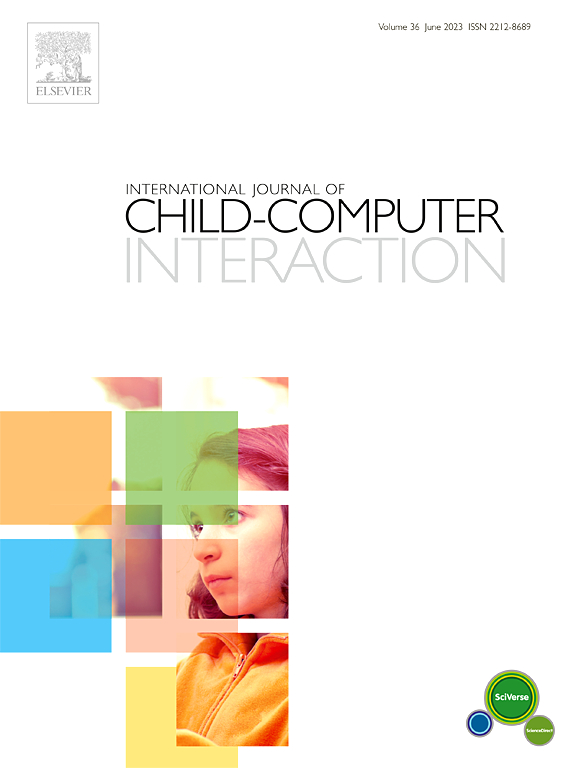

Jeremy E. Block, Shaghayegh Esmaeili, Eric D. Ragan, John R. Goodall, G. David Richardson (2022).
The Influence of Visual Provenance Representations on Strategies in a Collaborative Hand-off Data Analysis Scenario
VIS’22: IEEE Transactions on Visualization and Computer Graphics 29.1.
Peer-Reviewed Conference Papers
Sarah Morrison-Smith, Aishat Aloba, Hangwei Lu, Brett Benda, Shaghayegh Esmaeili, Gianne Flores, Jesse Smith, Nikita Soni, Isaac Wang, Rejin Joy, Damon L. Woodard, Jaime Ruiz, Lisa Anthony (2020).
MMGatorAuth: A Novel Multimodal Dataset for Authentication Interactions in Gesture and Voice
Proceedings of the 2020 International Conference on Multimodal Interaction (ICMI’20), October 2020, pp. 370-377.
Nikita Soni, Schuyler Gleaves, Hannah Neff, Sarah Morrison-Smith, Shaghayegh Esmaeili, Ian Mayne, Sayli Bapat, Carrie Schuman, Kathryn A. Stofer, Lisa Anthony (2020).
Adults’ and Children’s Mental Models for Gestural Interactions with Interactive Spherical Dis- plays
In Proceedings of the 2020 CHI Conference on Human Factors in Computing Systems (CHI 20). Association for Computing Machinery, New York, NY, USA, 112.
Shaghayegh Esmaeili, Brett Benda, Eric D. Ragan (2020).
Detection of Scaled Hand Interactions in Virtual Reality: The Effects of Motion Direction and Task Complexity
Proceedings of the 2020 IEEE Conference on Virtual Reality and 3D User Interfaces (VR), Atlanta, Georgia, USA, 2020, pp. 453-462.
Nikita Soni, Schuyler Gleaves, Hannah Neff, Sarah Morrison-Smith, Shaghayegh Esmaeili, Ian Mayne, Sayli Bapat, Carrie Schuman, Kathryn A. Stofer, Lisa Anthony (2019).
Do User-Defined Gestures for Flatscreens Generalize to Interactive Spherical Displays for Adults and Children?
PerDis ’19 Proceedings of the 8th ACM International Symposium on Pervasive Displays.
Julia Woodward, Shaghayegh Esmaeili, Ayushi Jain, John Bell, Jaime Ruiz, and Lisa Anthony (2018).
Investigating Separation of Territories and Activity Roles in Childrens Collaboration around Tabletops
Proceedings of the ACM on Human-Computer Interaction. Volume 2, CSCW, Article 185, pp 1–21.
Peer-Reviewed Journal Article

Min Kyong Kim, Stefania Druga, Shaghayegh Esmaeili, Julia Woodward, Alex Shaw, Ayushi Jain, Jaida Langham, Kristy Hollingshead, Silvia B. Lovato, Erin Beneteau, Jaime Ruiz, Lisa Anthony, Alexis Hiniker (2022).
Examining voice assistants in the context of children’s speech.
International Journal of Child-Computer Interaction, Volume 34, 2022.
.png)

Peer-Reviewed Extended Abstract
Aishat Aloba, Gianne Flores, Jaida Langham, Zari McFadden, John Bell, Nikita Dagar, Shaghayegh Esmaeili, and Lisa Anthony (2020).
Toward Exploratory Design with Stakeholders for Understanding Exergame Design
In Extended Abstracts of the 2020 CHI Conference on Human Factors in Computing Systems (CHI EA ’20). Association for Computing Machinery, New York, NY, USA, 1–8.